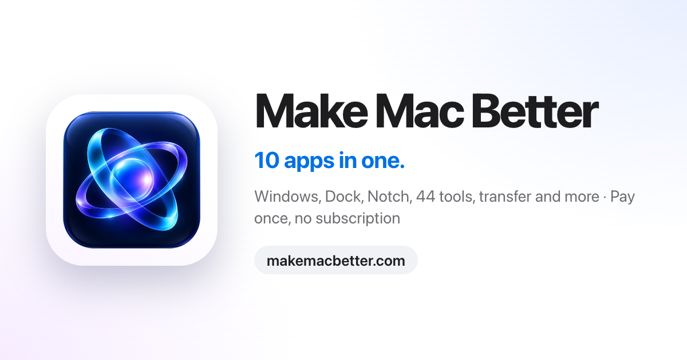

Make Mac Better
Ten Mac apps in one. A native macOS app by Sergio Fernández that replaces a handful of separate utilities.
- Window tiling and strip layouts
- A second dock with widgets, also on a second monitor
- 44 local tools for video, PDF, images and on-device AI
- Automatic file organizing
- Phone-to-Mac transfer by QR code (iPhone and Android)
- Screenshots with an editor and screen recording
- Keep your Mac awake, plus notch tools
One-time purchase, no subscription. macOS 15 or later on Apple Silicon. 5-day refund.
Get Make Mac Better

makemacbetter.com